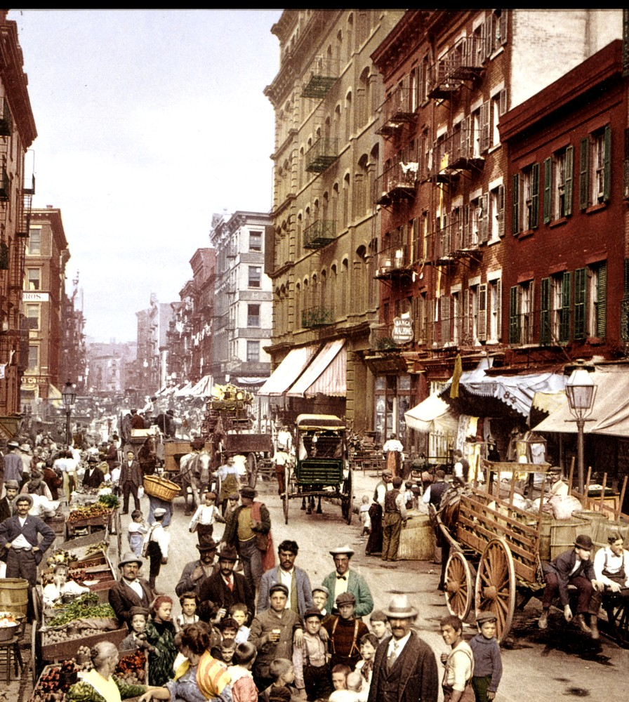

Mulberry Street, Little Italy
TONY’S
Ristorante. Lunch and dinner, every day.

Tony’s
Tony, proprietor
Mulberry St., New York
(212) 555-0194
Mulberry St., New York
(212) 555-0194
Thurs. T.
Our block of Mulberry Street, 1900. Still feeding it.
Dalla cucina

Pasta
Spaghetti Tony8.95
San Marzano tomatoes crushed by hand, garlic cooked slow, basil and a knob of butter. Parmigiano on the side. Ask for Tony.
Baked Ziti9.25
Ricotta, mozzarella and Sunday gravy, baked bubbling in its own dish.
Linguine Vongole11.50
Littleneck clams, garlic, white wine and parsley.
My regulars sit in the back, drink their milk and say nothing. Quiet people, I trust. Mangia.
Tony